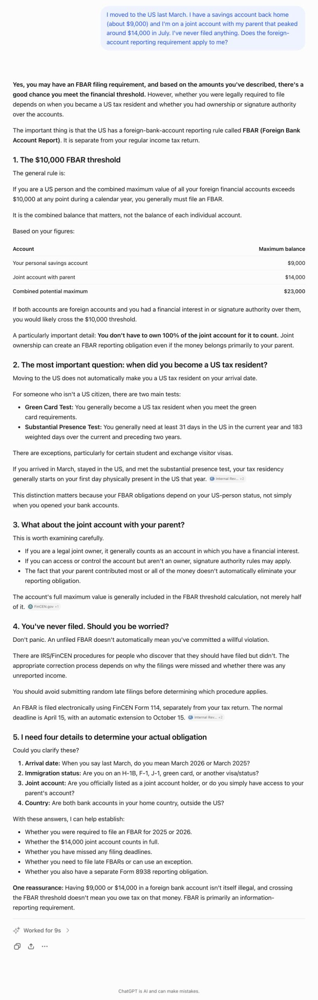
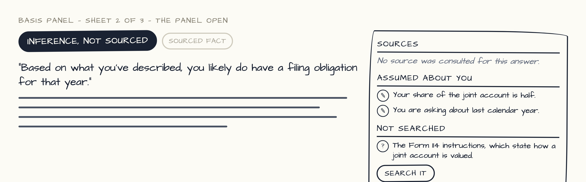
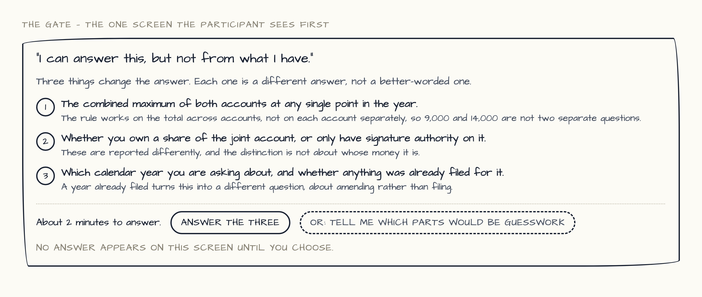
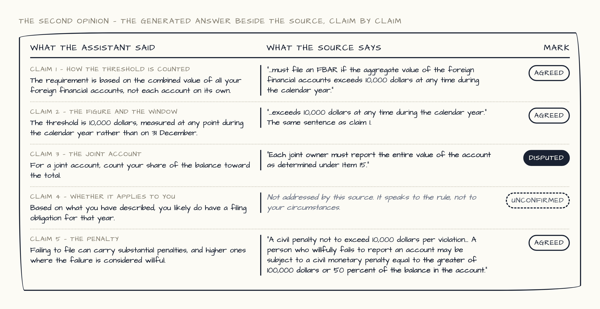

Look at all four versions, then go back to the survey tab. Click an image to open it full size.
The assistant answers directly.

The answer carries a label saying what kind of answer it is, and a panel showing what it rests on: sources used, things assumed about you, and the authority it did not consult. You can correct an assumption and the answer updates.

No answer yet. The assistant names the three facts that would change the answer and offers to tell you which parts would be guesswork if you skip them.

The answer appears beside the same question put to the official source, claim by claim, marked where they agree, disagree, or where the source says nothing.

Done? Go back to the survey tab.